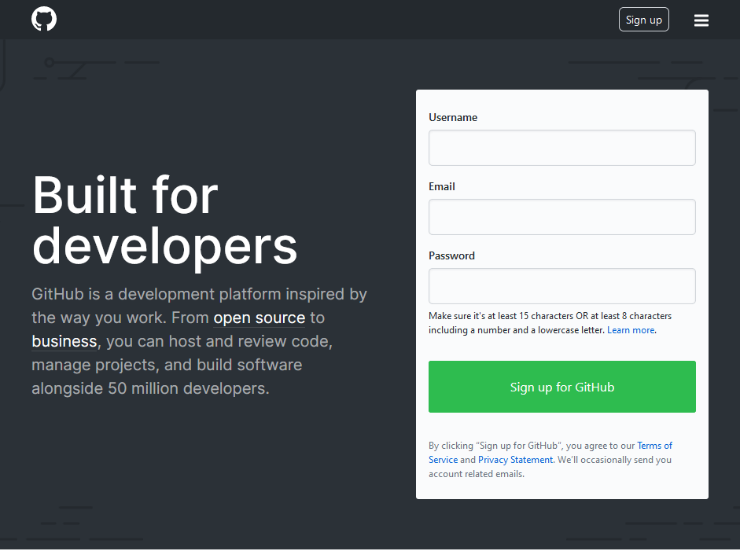
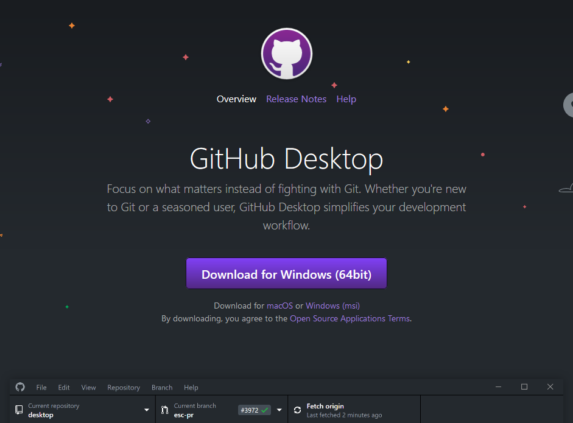
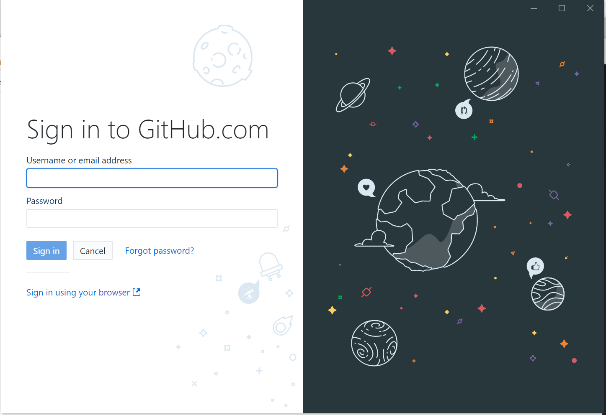
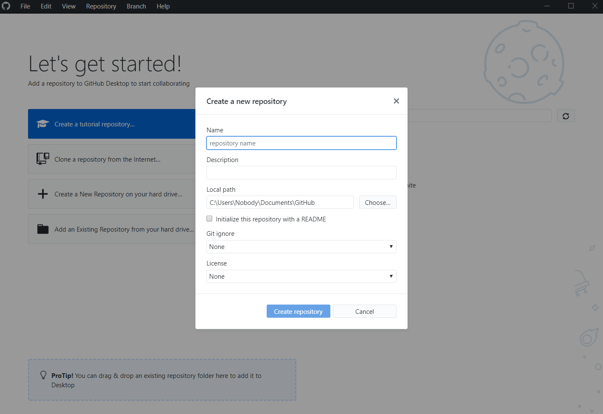
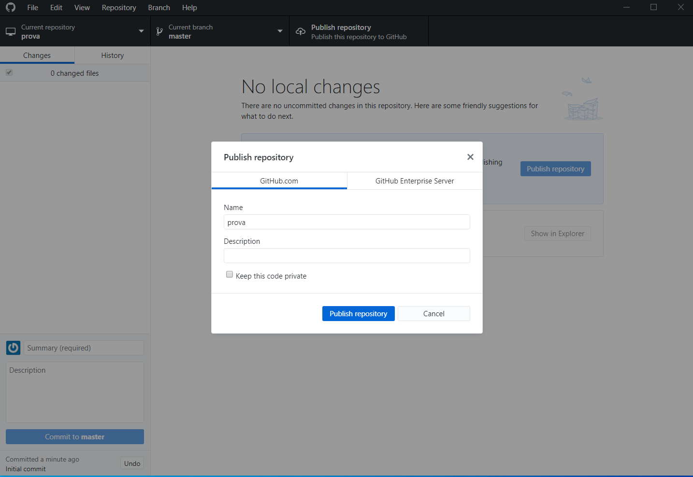
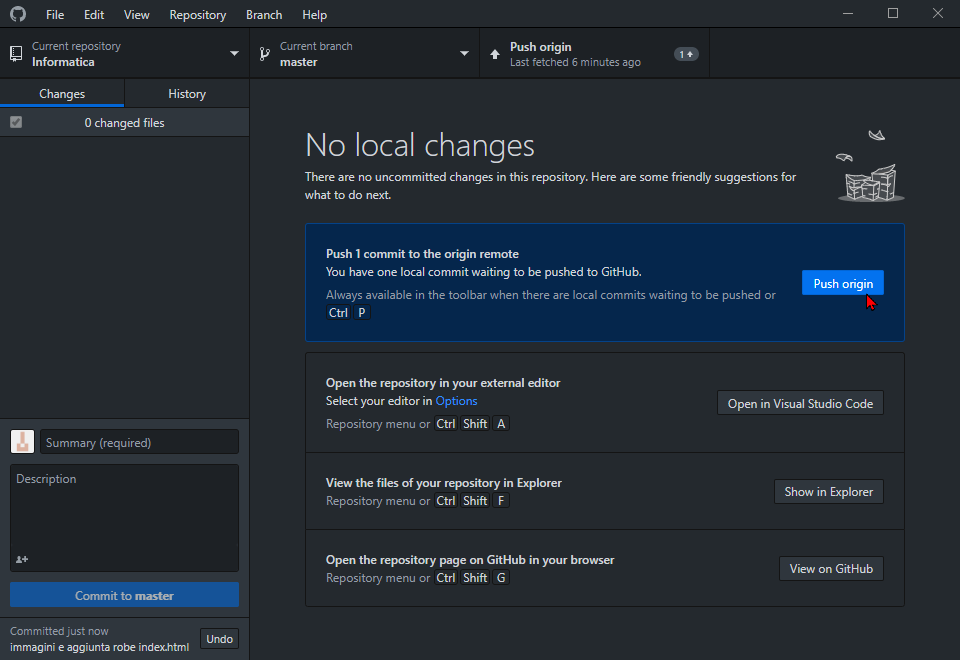
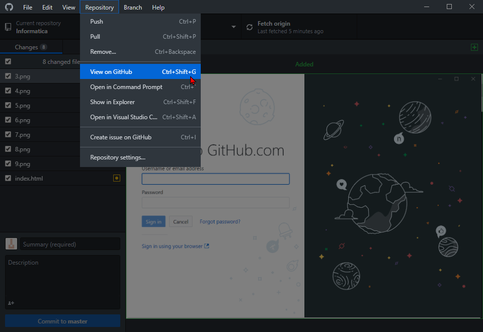
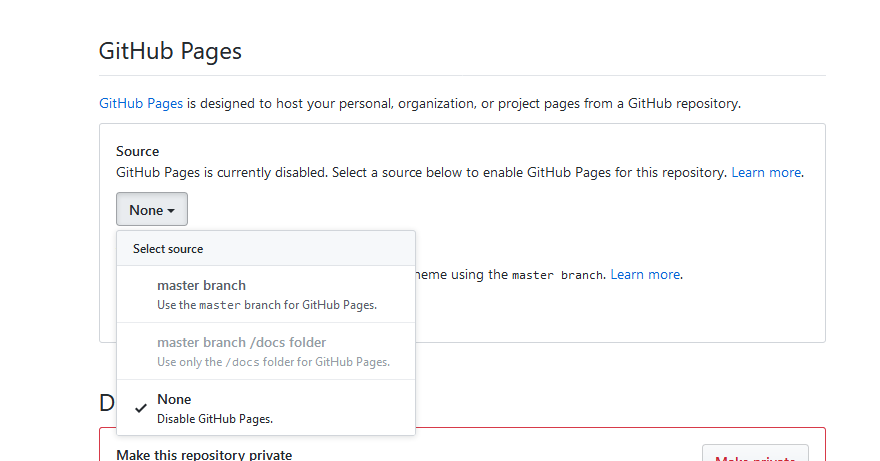
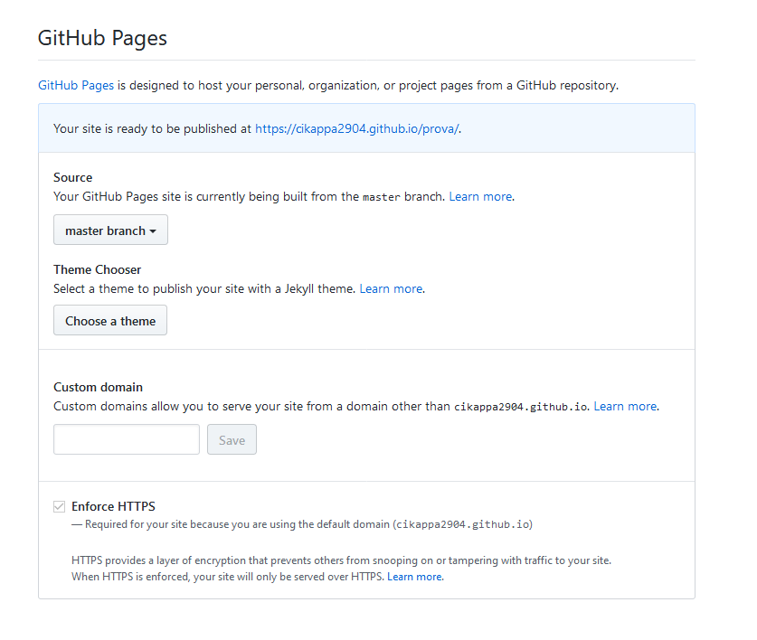

Ho hostato questa pagina html utilizzando Github Pages
Innanzitutto andare su Github.com e registrarsi
Dopodichè andare su desktop.github.com, scaricare Github Desktop per il proprio sistema operativo, e installarlo
Aprire GitHub Desktop e effettuare il login con le credenziale scelte precedentemente
Creare una repository nel nostro computer locale
Pubblicare la repository online su Github assicurandosi di renderla pubblica
Iniziare a creare la nostra pagina html utilizzando il nostro editor di testo preferito (come per esempio il blocco note, VSCode o Atom),
assicurandosi di essere nella cartella dove abbiamo creato la repository. Di default si trova nella cartella Documenti/Github
Una volta finita di creare la pagina html, tornare su GitHub Desktop e come si può notare si sarà già accorto di tutte le modifiche che abbiamo apportato ai file dentro la cartella.
A questo punto scrivere nella casella di testo in basso a sinistra sopra Description una piccola frase che descriva le modifiche che abbiamo apportato alla cartella e cliccare commit to master
Dopodiché cliccare su Push Origin per inviare tutte le modifiche al server di GitHub
A questo tornare su GitHub Desktop e nella barra dei menu in alto andare su Repository e cliccare su View on GitHub
Dopodiché andare su settings, scendere giù fino alla sezione GitHub Pages e nel menu a tendina sotto Source selezionare il master branch
A questo punto sempre nella sezione GitHub Pages troverete il link per entrare nel vostro sito
